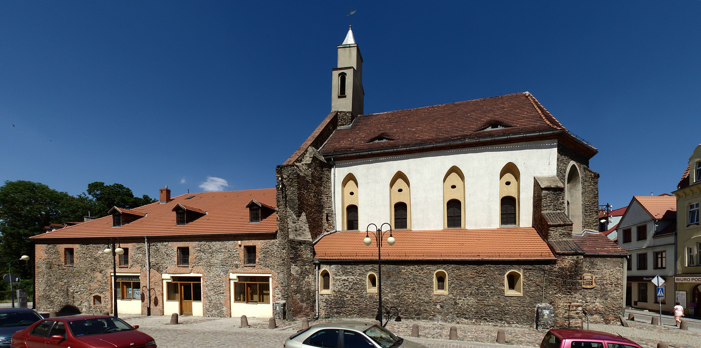
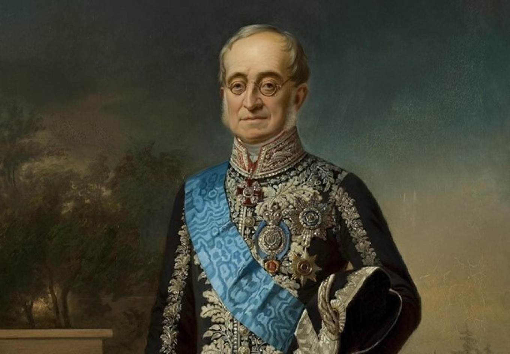
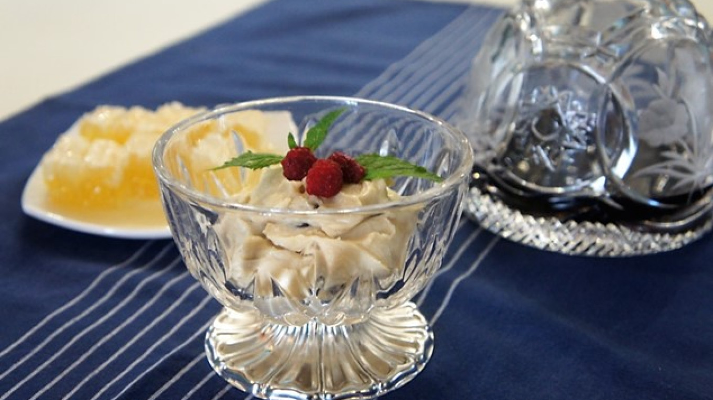
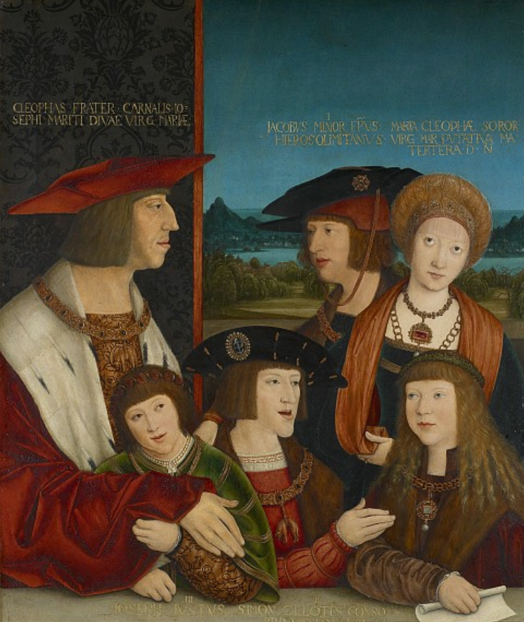
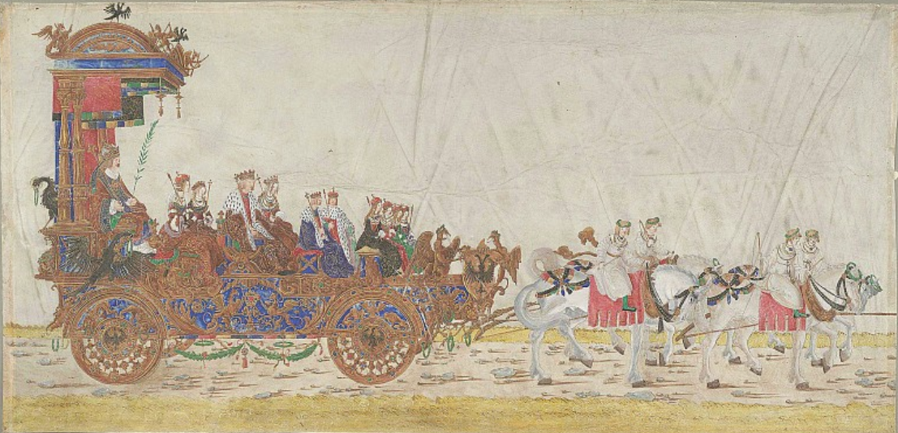

휴전 (10) - 메테르니히, 드레스덴을 향하다
게시: 2023-09-04T06:30:23+09:00
영국은 여기저기 돈을 뿌려대며 연합군 진영 내에서 영국의 입지를 다지려고 노력했으나, 역시 당장 전쟁 당사자들에게는 돈보다는 총칼이 더 소중한 법이었습니다. 그 사실은 6월 중순, 라이헨바흐(Reichenbach) 조약으로 여실히 드러납니다. 6월 하순, 메테르니히는 드레스덴에서 만나자는 나폴레옹의 초대를 받습니다. 그 초대에 응해 드레스덴으로 출발하기 전에, 나폴레옹과의 회담에서 제시할 조건들에 대해 러시아 및 프로이센 측과 최종 합의를 보기 위해 라이헨바흐의 연합군 진영에 들렀습니다. 여기서 라인 연방 해체나 프로이센의 영토 회복 등에 대한 요구가 전혀 포함되지 않은 메테르니히의 4개 요구 조건에 대한 격론이 벌어졌습니다. 결론적으로는 메테르니히의 조건이 그대로 통과되었습니다. 대신 만약 나폴레옹이 그러한 평화 조건을 거부할 경우, 오스트리아는 15만의 병력을 이끌고 제6차 대불동맹전쟁에 참전할 것을 약속했습니다. 또한, 만약 그렇게 전투가 재개된 이후에 다시 평화 협상을 한다면 그때는 라인 연방 해체와 프로이센의 영토 회복도 협상 조건에 포함시키기로 결정이 되었습니다. 그런데 영국은 왜 여기서 자신을 위한 조건을 아무것도 요구하지 않았을까요? 실은 할래야 할 수가 없었습니다. 왜냐하면 영국은 라이헨바흐에서 그런 논의가 진행되고 있다는 사실 자체를 전혀 모르고 있었거든요. 이는 영국을 따돌리려는 메테르니히의 완벽한 외교적 승리가 낳은 결과였습니다.

(라이헨바흐는 지금은 폴란드의 도시 제르조니프(Dzierżoniów)가 되었습니다만 전통적으로는 슐레지엔이라는 독자성을 가지고 있던 곳으로서 15세기 이후 오스트리아 합스부르크의 지배를 받다가 7년 전쟁 이후 프로이센에게 넘어간 곳입니다. 지금도 인구 3만의 소도시인데, 사진에 보이는 것은 라이헨바흐에 있는 무원죄 잉태 (임마쿨라다 콘셉시온, Immaculate Conception) 교회입니다.) 그렇다고 러시아와 프로이센의 마음이 좋은 것은 아니었습니다. 메테르니히가 주장한 평화 조건이 너무나 마음에 들지 않았기 때문이었습니다. 그렇게 결정을 보고 드레스덴으로 떠나는 메테르니히의 뒷모습을 보며, 러시아와 프로이센은 나폴레옹이 그 4개 조건을 거부하기만을 두 손 모아 기도했습니다. 그 조건들이 그렇게 마음에 들지 않았다면 알렉산드르와 프리드리히 빌헬름은 왜 거기에 동의했을까요? 사실 그때까지만 해도 오스트리아가 연합군에 가담한다는 보장이 없었을 뿐만 아니라, 여차하면 나폴레옹 편에 붙어버릴 가능성도 없지 않았기 때문이었습니다. 생각해보면 오스트리아는 러시아와 발칸 반도와 옛 폴란드 땅을 놓고 치열하게 경쟁하는 사이였고, 프로이센과는 독일권의 주도권을 놓고 이해가 상충되는 관계였습니다. 무엇보다 프란츠 1세는 나폴레옹의 장인이고, 불과 몇 달 전만 해도 오스트리아군은 프랑스군과 함께 러시아를 침공한 적군이었습니다. 오스트리아가 만에 하나라도 중립은 커녕 나폴레옹 측에 가세한다면 연합군은 그야말로 끝장이었습니다. 그러니 지금은 어떻게든 오스트리아가 하자는 대로 하는 수밖에 없었습니다. 하지만 오스트리아는 자존심 강한 제국이었고, 이미 나폴레옹이 강압적으로 주도하는 유럽 질서는 깨져야 한다고 결론을 내리고 있었습니다. 오스트리아가 원하는 것은 중부 유럽, 그러니까 라인 강 동쪽부터 비스와 강 서쪽 사이는 오스트리아가 독립적안 주도권을 행사하는 것이었습니다. 거기에다 러시아 외교관인 네셀로더가 프란츠 1세에게 직접 호소한 내용도 매우 설득력이 있는 논리를 가지고 있었습니다. 네셀로더에 따르면 메테르니히가 내세운 평화 조건은 일시적 휴전을 낳을 뿐이며 나폴레옹은 러시아 원정 실패의 혼란에서 벗어나 병력을 재편하는 즉시 다시 유럽 대륙을 정복하려 할 괴물이었습니다. 네셀로더는 오스트리아와 프로이센이 프랑스를 견제할 정도로 충분히 강해지는 것을 러시아도 바란다고 말하며, 그 이유는 그렇지 않을 경우 1805년과 1806년 때처럼 저 멀리 동쪽에 위치한 러시아가 개입하기 전에 나폴레옹이 오스트리아와 프로이센을 격파할 것이기 때문이라고 주장했습니다. 그러면서 프랑스 혁명 이후 사상 처음으로 러시아-오스트리아-프로이센 3개군이 서로 합동 작전을 펼칠 수 있는 근거리에 모이게 되었는데 이런 기회는 절대 놓쳐서는 안 된다고 호소했습니다. 이건 실제로도 그랬습니다. 그동안 나폴레옹이 유럽을 짓밟고 다닐 수 있었던 것은 유럽 대륙의 3대 강자인 러-오-프가 그동안 한번도 하나로 뭉치지 못했기 때문이었습니다. 이제 러-오-프가 하나로 뭉친다면, 희대의 정복자 나폴레옹도 몰락할 수 밖에 없었습니다.

(전에 설명드린 독일 출신의 러시아 외교관인 네셀로더입니다. 당시 33세였던 그는 1822년부터 1856년까지 러시아의 외무부 장관직을 맡아 역대 최장수 러시아 외무부 장관이라는 기록도 세웠습니다만, 크림 전쟁에서 러시아가 고립되었던 이유는 그의 완고한 정책 때문이었다고 합니다.)

(외교는 흔히 파티와 만찬 자리에서 이루어지기 때문에 외교관에게는 요리가 매우 중요하기도 한데, 그래서인지 네셀로더는 네셀로더 푸딩이라는 디저트의 창시자로도 알려져 있습니다. 요리법을 요약하면 삶은 밤을 크림, 바닐라, 시럽, 그리고 증류주와 섞어서 잘게 부순 얼음 위에 얹어 내놓는 것으로서, 일종의 아이스크림과 무스의 중간 형태라고 할 수 있습니다.) 그런 배경이 있었기 때문에, 메테르니히는 마치 승자가 패자에게 아량을 베푸는 듯한 매우 관대한 평화 협상 조건을 가지고 드레스덴의 나폴레옹을 찾아간 것이었습니다. 메테르니히는 나폴레옹과 마리-루이즈의 결혼을 성사시킨 장본인으로서, 나폴레옹과도 개인적으로 매우 잘 아는 사이이고 친불파라고도 할 수 있는 인물이었으므로 나폴레옹이 호의적으로 대해주는 인물이었습니다. 그래서 메테르니히는 평화 사절로서의 자신의 임무는 성공할 수 밖에 없다고 자신하며 가벼운 마음으로 드레스덴을 향했습니다. 한편, 거의 퍼주기식으로 양보를 하며 6월 4일의 플레슈비츠(Pläswitz) 휴전 조약을 맺은 뒤 나폴레옹이 서둘러 향한 곳은 바로 드레스덴이었습니다. 이유는 바로 거기에 오스트리아의 평화 중재 사절인 부브나 장군이 있었기 때문이었습니다. 그는 그렇게 드레스덴을 향하며 부하들에게 이렇게 말했다고 합니다. "만약 연합군이 진짜 평화 조약을 바라고 휴전을 한 것이 아니라면 이 휴전은 우리에게 치명적인 실수가 될 수도 있는데." 그런데 그렇게 서둘러 부브나를 만나자마자 나폴레옹은 뭔가가 잘못 되었다는 것을 직감할 수 있었습니다. 부브나가 사소한 의전상의 문제 등을 핑계 삼아 모든 일을 미루고 꾸물거렸던 것입니다. 분통이 터진 나폴레옹은 어차피 부브나는 꼭두각시일 뿐 이 모든 일에 있어서 실제 결정권은 메테르니히에게 있다는 것을 잘 알고 있었으므로 메테르니히를 직접 보고 이야기해야겠다고 생각하여 그를 드레스덴으로 부른 것이었습니다. 이때까지만 해도 나폴레옹은 오스트리아가 실제로 연합군에 붙을 것이라는 생각을 전혀 하지 않고 있었다고 합니다. 그는 기껏해야 오스트리아가 중립을 지키는 대가로 뭔가 땅덩이를 요구하거나 그럴 것이라고 생각했습니다. 어떻게 생각하면 놀라운 일입니다. 자신이 그토록 여러 번 오스트리아군을 격파했고 수도 빈(Wien)도 두 번이나 점령해놓고도 오스트리아가 그에 대해 앙심을 품고 있을 것이라는 생각을 하지 않다니요! 이건 나폴레옹이 군사적 천재일 뿐만 아니라 매우 유능한 정치인이긴 하지만 어쩔 수 없는 이탈리아 감성의 코르시카 출신 시골뜨기 귀족에 불과하다는 것을 보여줍니다. 그는 마리-루이즈와 결혼하여 프란츠 1세의 사위가 되면서 자신이 정말 합스부르크 왕가의 패밀리가 되었다고 생각했던 것입니다. 그는 합스부르크 왕가에 있어서 결혼이란 어디까지나 정치외교적인 수단일 뿐 그 아들이나 딸의 결혼 생활을 파탄내는 것은 그냥 전쟁터에서 1개 사단을 희생시키는 것과 전혀 다르지 않다는 것을 이해하지 못하고 있었습니다. 나폴레옹은 비록 정략 결혼으로 맺어진 사이이긴 했지만, 조세핀과는 달리 양순하고 교양 있는 처녀였던 마리-루이즈를 정말로 사랑하고 있었기에 더더욱 오스트리아의 배신은 생각하지도 않고 있었습니다.

(결혼을 통해 합스부르크 왕가를 훗날 유럽의 대제국으로 이끈 막시밀리안 1세와 그의 가족입니다. 벌써부터 자식들에게 주걱턱이 살짝 보이는군요. 1520년대의 유화입니다. 막시밀리안은 당시 유럽 최고의 지참금을 가진 신부라고 불리던 부르고뉴 왕국의 마리아와 결혼하면서 오스트리아가 제국으로 발돋움하기 위한 첫 발판을 마련했습니다. 바로 오늘날 네덜란드-벨기에 지방인 플랑드르와 브라반트를 화살 하나 날리지 않고 손에 넣은 것입니다. 물론 그로 인해 프랑스 발로아(Valois) 왕조와의 갈등도 시작되었습니다. 뿐만 아니라 그의 아들인 미남왕 필립은 스페인 카스티야 왕국의 후아나와 결혼했고, 후아나의 남동생인 후안(Juan)은 필립의 여동생인 마가렛과 결혼하여 겹사돈을 맺었는데, 그만 후안이 일찍 죽는 바람에 스페인이 통째로 합스부르크 가문 소유로 넘어오게 되었습니다.)

(막시밀리안 1세의 트리움프주크(Triumphzug), 즉 개선 행렬 또는 개선용 마차입니다. 보통 개선 행렬이라고 하면 번쩍이는 갑옷 차림의 군사 행렬을 해야 할 것 같은데, 결혼으로 모든 것을 이룬 합스부르크 가문답게 온 가족이 커다란 마차를 타고 행진하는군요. 마차 맨 뒤의 천개 밑에 앉은 사람이 바로 막시밀리안 1세이고, 그 앞에는 그의 첫번째 부인인 부르고뉴 왕국 출신 마리아가 며느리인 카스티야의 후아나(Juanna)과 함께 앉아 있습니다. 그 앞에 앉은 것은 후아나의 남편이자 막시밀리안의 아들인 필립이고, 그와 함께 앉은 것은 필립의 여동생인 마가렛입니다. 그 앞에 앉은 것은 필립의 자식들입니다.) 그렇게 6월 27일, 드레스덴에서 나폴레옹은 마침내 메테르니히와 독대하게 됩니다. 이 독대는 당시로서는 충격적이게도 오전 11시 45분부터 저녁 9시까지, 무려 9시간이 넘게 이어집니다. 이 역사적인 회담에서 어떤 이야기가 오갔울까요? Source : The Life of Napoleon Bonaparte, by William Milligan Sloane Napoleon and the Struggle for Germany, by Leggiere, Michael V https://en.wikipedia.org/wiki/Treaties_of_Reichenbach_(1813) https://www.themoscowtimes.com/2022/08/13/karl-nesselrode-foreign-minister-and-pudding-a78561 https://www.habsburger.net/en/chapter/maximilian-and-habsburg-matrimonial-policy https://en.wikipedia.org/wiki/Margaret_of_Austria,_Duchess_of_Savoy